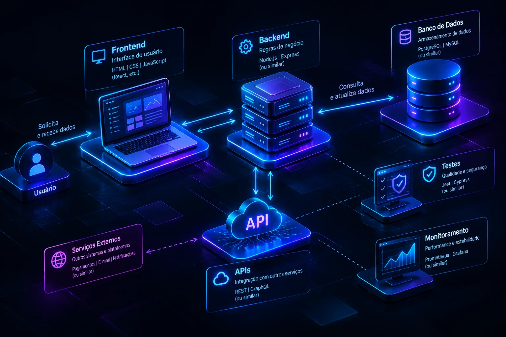

Desenvolvimento
Assistentes de código, refatoração e análise de bugs aceleram o dia a dia.
Software de verdade nasce de um problema, passa por requisitos, arquitetura, testes e segurança, e continua evoluindo depois do lançamento. Descubra o que existe por trás da tela.
Sobre este site: ele foi criado para uma apresentação. Meu nome é Guilherme, sou da turma do curso de TI, e todo o conteúdo é apenas para fins educativos.

Cada parte tem uma função: a interface recebe o usuário, o back-end aplica as regras, o banco guarda os dados e a API conversa com o mundo. Testes e monitoramento mantêm tudo de pé.
IA, automação e novas tecnologias estão mudando como software é projetado, testado e mantido.
Assistentes de código, refatoração e análise de bugs aceleram o dia a dia.
Automatizam tarefas e integram APIs, mas precisam de supervisão humana.
Detecção de fraudes e monitoramento inteligente reforçam a proteção dos dados.
Não é apenas fazer software funcionar. É construir software que possa continuar funcionando.